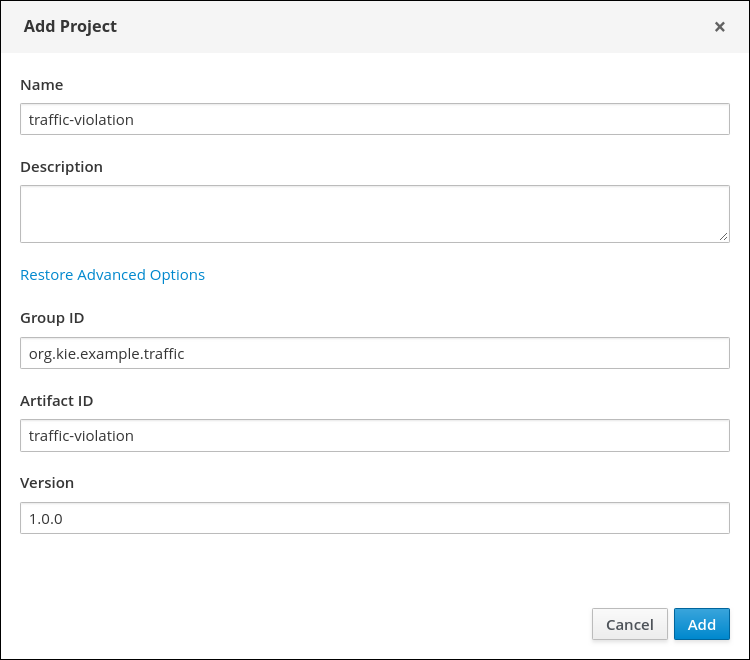
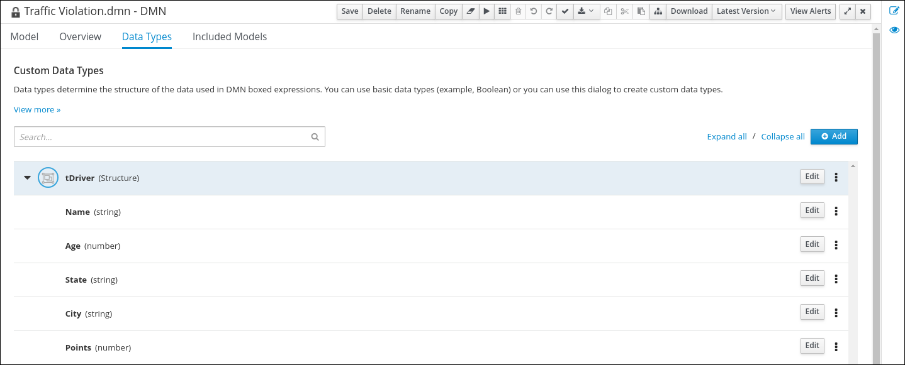
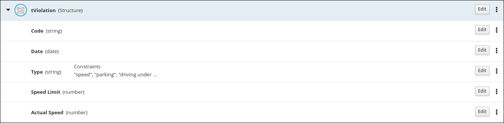
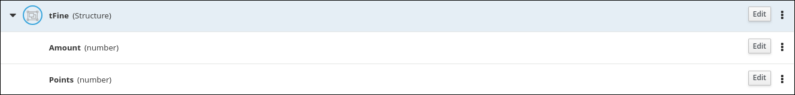
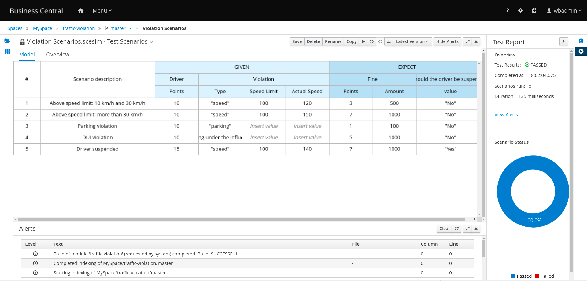

Designing a decision service using DMN models
Abstract
Preface
Red_Hat Customer_Content_Services <brms-docs@redhat.com>
As a business analyst or business rules developer, you can use Decision Model and Notation (DMN) to model a decision service graphically in a decision requirements diagram (DRD). This diagram consists of one or more decision requirements graphs (DRGs) that trace business decisions from start to finish, with each decision node using logic defined in DMN boxed expressions such as decision tables. Red Hat Decision Manager provides design and runtime support for DMN 1.2 models at conformance level 3. You can design your DMN models directly in Business Central or import existing DMN models into your Red Hat Decision Manager projects for deployment and execution.
For more information about DMN, see the Object Management Group (OMG) Decision Model and Notation specification.
Chapter 1. Example projects and business assets in Business Central
Business Central contains example projects with example business assets that you can use as a reference for the rules or other assets that you create in your own Red Hat Decision Manager projects. Each sample project is designed differently to demonstrate decision management or business optimization assets and logic in Red Hat Decision Manager.
Red Hat does not provide support for the example code included in the Red Hat Decision Manager distribution.
The following example projects are available in Business Central:
- Traffic_Violation: (Decision management with DMN) Example traffic violation decision service using a Decision Model and Notation (DMN) model. Determines driver penalty and suspension based on traffic violations.
- Mortgages: (Decision management with rules) Example loan approval process using rule-based decision assets. Determines loan eligibility based on applicant data and qualifications.
- Employee_Rostering: (Business optimization) Example employee rostering optimization using decision and solver assets. Assigns employees to shifts based on skills.
- OptaCloud: (Business optimization) Example resource allocation optimization using decision and solver assets. Assigns processes to computers with limited resources.
- Course_Scheduling: (Business optimization) Example course scheduling and curriculum decision process. Assigns lectures to rooms and determines a student’s curriculum based on factors, such as course conflicts and class room capacity.
- Dinner_Party: (Business optimization) Guest seating optimization using guided decision tables. Assigns guest seating based on each guest’s job type, political beliefs, and known relationships.
1.1. Accessing example projects and business assets in Business Central
You can use the example projects in Business Central to explore example business assets as a reference for the rules or other assets that you create in your own Red Hat Decision Manager projects.
Prerequisites
- Business Central is installed and running. For installation options, see Planning a Red Hat Decision Manager installation.
Procedure
In Business Central, go to Menu → Design → Projects and click Try Samples.
If a project already exists, click the three vertical dots in the upper-right corner of the Projects page and click Try Samples.
- Review the descriptions for each sample project to determine which project you want to explore. Each sample project is designed differently to demonstrate decision management or business optimization assets and logic in Red Hat Decision Manager.
- Select one or more sample projects and click Ok to add the projects to your space.
- In the Projects page of your space, select one of the new example projects to view the example assets for that project.
- Select each example asset to explore how the project is designed to achieve the specified goal or workflow.
In the upper-right corner of the project Assets page, click Build to build the sample project or Deploy to build the project and then deploy it to Decision Server.
NoteYou can also select the Build & Install option to build the project and publish the KJAR file to the configured Maven repository without deploying to a Decision Server. In a development environment, you can click Deploy to deploy the built KJAR file to a Decision Server without stopping any running instances (if applicable), or click Redeploy to deploy the built KJAR file and replace all instances. The next time you deploy or redeploy the built KJAR, the previous deployment unit (KIE container) is automatically updated in the same target Decision Server. In a production environment, the Redeploy option is disabled and you can click Deploy only to deploy the built KJAR file to a new deployment unit (KIE container) on a Decision Server.
To configure the Decision Server environment mode, set the
org.kie.server.modesystem property toorg.kie.server.mode=developmentororg.kie.server.mode=production. To configure the deployment behavior for a corresponding project in Business Central, go to project Settings → General Settings → Version and toggle the Development Mode option. By default, Decision Server and all new projects in Business Central are in development mode. You cannot deploy a project with Development Mode turned on or with a manually addedSNAPSHOTversion suffix to a Decision Server that is in production mode.To review project deployment details (if applicable), go to Menu → Deploy → Execution Servers.
Chapter 2. Creating the traffic violations project
For this example, create a new project called traffic-violation. A project is a container for assets such as data objects, DMN assets, and test scenarios. This example project that you are creating is similar to the existing Traffic_Violation sample project in Business Central.
Procedure
- Log in to Business Central.
Go to Menu → Design → Projects.
Red Hat Decision Manager provides a default space called MySpace, as shown in the following image. You can use the default space to create and test example projects.
Figure 2.1. Default space

- Click Add Project.
-
Enter
traffic-violationin the Name field. Click Configure Advanced Options to expand the GAV fields and enter the following values:
-
Group ID:
org.kie.example.traffic -
Artifact ID:
traffic-violation -
Version:
1.0.0
-
Group ID:
Click Add.
Figure 2.2. Add Project window with expanded Advanced Options
The Assets view of the project opens.
Chapter 3. Decision Model and Notation (DMN)
Decision Model and Notation (DMN) is a standard established by the Object Management Group (OMG) for describing and modeling operational decisions. DMN defines an XML schema that enables DMN models to be shared between DMN-compliant platforms and across organizations so that business analysts and business rules developers can collaborate in designing and implementing DMN decision services. The DMN standard is similar to and can be used together with the Business Process Model and Notation (BPMN) standard for designing and modeling business processes.
For more information about the background and applications of DMN, see the OMG Decision Model and Notation specification.
3.1. Creating the traffic violations DMN decision requirements diagram (DRD)
A decision requirements diagram (DRD) is a visual representation of your DMN model. Use the DMN designer in Business Central to design the DRD for the traffic violations project and to define the decision logic of the DRD components.
Figure 3.1. DRD for the Traffic Violations example
Prerequisites
- You have created the traffic violations project in Business Central.
Procedure
- On the traffic-violation project’s home page, click Add Asset.
On the Add Asset page, click DMN. The Create new DMN window is opened.
-
In the Create new DMN window, enter
Traffic Violationin the DMN name field. -
From the Package list, select
org.kie.example.traffic.traffic_violation. - Click Ok. The DMN asset in the DMN designer is opened.
-
In the Create new DMN window, enter
- In the DMN designer canvas, drag two DMN Input Data input nodes on to the canvas.
-
Double-click each input node and rename one to
Driverand the other toViolation. - Drag a DMN Decision decision node on to the canvas.
-
Double-click the decision node and rename it to
Fine. -
Click the Violation input node, select the Create DMN Information Requirement icon and click the
Finedecision node to link the two nodes. - Drag a DMN Decision decision node on to the canvas.
-
Double-click the decision node and rename it to
Should the driver be suspended?. - Click the Driver input node, select the Create DMN Information Requirement icon and click the Should the driver be suspended? decision node to link the two nodes.
- Click the Fine decision node, select the Create DMN Information Requirement icon, and select the Should the driver be suspended? decision node.
- Click Save and click Save again to confirm.
3.2. Creating the traffic violations DMN custom data types
DMN data types determine the structure of the data that you use within a table, column, or field in a DMN boxed expression for defining decision logic. You can use default DMN data types (such as string, number, or boolean) or you can create custom data types to specify additional fields and constraints that you want to implement for the boxed expression values. Use the DMN designer’s Data Types tab in Business Central to define the custom data types for the traffic violations project.
Figure 3.2. The custom data types tab
Alternately, you can also access the Data Types tab from the Diagram properties tab on the right. From the Diagram properties tab, click Manage from Data type under Information item.
Figure 3.3. Diagram properties tab
The following tables list the Violation, Driver, and Fine custom data types that you will create for this project.
Table 3.1. Driver custom data types
| Name | Type |
|---|---|
|
tDriver |
Structure |
|
Name |
string |
|
Age |
number |
|
State |
string |
|
City |
string |
|
Points |
number |
Table 3.2. Violation custom data types
| Name | Type |
|---|---|
|
tViolation |
Structure |
|
Code |
string |
|
Date |
date |
|
Type |
string |
|
Speed Limit |
number |
|
Actual Speed |
number |
Table 3.3. Fine custom data types
| Name | Type |
|---|---|
|
tFine |
Structure |
|
Amount |
number |
|
Points |
number |
Prerequisites
- You created the traffic violations DMN decision requirements diagram (DRDs) in Business Central.
Procedure
To create the tDriver custom data type, click Add on the Data Types tab, enter
tDriverin the Name field, selectStructurefrom the Type list, and click Save.Figure 3.4. The tDriver custom data type
-
To create the first nested data type, enter
Namein the Name field of the nested data type, select String from the Type list and click Save. For each of the remaining nested data types, click the three vertical dots next to the tDriver data type, select Insert nested field, and add the following nested data types. Click Save for each nested data type you add.
- Name (string)
- Age (number)
- State (string)
- City (string)
- Points (number)
To create the tViolation custom data type, click Add on the Data Types tab, enter
tViolationin the Name field, selectStructurefrom the Type list, and click Save.Figure 3.5. The tViolation custom data type
-
To create the first nested data type, enter
Codein the Name field of the nested data type, select String from the Type list and click Save. For each of the remaining nested data types, click the three vertical dots next to the tViolation data type, select Insert nested field, and add the following nested data types. Click Save for each nested data type that you add.
- Code (string)
- Date (date)
- Type (string)
- Speed Limit (number)
- Actual Speed (number)
To add the following constraints to the
Typenested data type, click Edit → Constraints → Enumeration and add the following constraints. Click the check icon to save each enumeration constraint that you add.-
"speed" -
"parking" -
"driving under the influence"
-
To create the tFine custom data type, click Add on the Data Types tab, enter
tFinein the Name field, selectStructurefrom the Type list, and click Save.Figure 3.6. The tFine custom data type
-
To create the first nested data type, enter
Amountin the Name field of the nested data type, select Number from the Type list and click Save. For each of the remaining nested data types, click the three vertical dots next to the tFine data type, select Insert nested field, and add the following nested data types. Click Save for each nested data type that you add.
- Amount (number)
- Points (number)
- Once all the three custom data types are created, click Save to open the Confirm Save dialog box and click Save again.
3.3. Assigning custom data types to the DRD input and decision nodes
After you create the DMN custom data types, assign them to the appropriate DMN Input Data and DMN Decision nodes in the traffic violations DRD.
Prerequisites
- You have created the traffic violations DMN custom data types in Business Central.
Procedure
- Click the Model tab on the DMN designer and click Diagram properties in the top-right corner of the DMN designer to expose the DRD properties.
-
In the DRD, select the Driver input data node and in the Diagram properties panel, set Data type to
tDriver. -
Select the Violation input data node and set the Data type to
tViolation. -
Select the Fine input data node and set the Data type to
tFine. Select the Should the driver be suspended? decision node and set the following properties:
-
Data type:
string -
Question:
Should the driver be suspended due to points on his driver license? -
Allowed Answers:
"Yes","No"
-
Data type:
- Click Save to open the Confirm Save dialog box and click Save again.
You have assigned the custom data types to your DRD’s input and decision nodes.
3.4. Defining the traffic violations DMN decision logic
To calculate the fine and to decide whether the driver is to be suspended or not, you can define the traffic violations DMN decision logic using a DMN decision table and context boxed expression.
Figure 3.7. Fine decision table
Figure 3.8. Should the driver be suspended?
Prerequisites
- You have assigned the DMN custom data types to the appropriate decision and input nodes in the traffic violations DRD in Business Central.
Procedure
- To calculate fine, in the DMN designer canvas, select the Fine decision node and click the Edit icon to open the DMN boxed expression designer.
- Click Select expression → Decision Table.
- For the Violation.Date, Violation.Code, and Violation.Speed Limit parameter fields, right-click and select Delete for each field.
-
Click the Violation.Actual Speed column header and enter the expression
Violation.Actual Speed - Violation.Speed Limitin the Name field. -
Right-click the Fine parameter field and select either
Insert leftorInsert right. -
Click the output-2 column sub-header, enter
Amountin the Name field, and selectnumberfrom the Data Type field. -
Similarly, click the output-1 column sub-header, enter
Pointsin the Name field, and selectnumberfrom the Data Type field. Next, enter the following values in the first row of the decision table:
-
Violation.Type:
"speed" -
Violation.Actual Speed - Violation.Speed Limit:
[10..30) -
Amount:
500 Points:
3Right-click the first row and select
Insert belowto add another row.
-
Violation.Type:
Enter the following values in the second row of the decision table:
-
Violation.Type:
"speed" -
Violation.Actual Speed - Violation.Speed Limit:
>= 30 -
Amount:
1000 Points:
7Right-click the second row and select
Insert belowto add another row.
-
Violation.Type:
Enter the following values in the third row of the decision table:
-
Violation.Type:
"parking" -
Violation.Actual Speed - Violation.Speed Limit:
- -
Amount:
100 Points:
1Right-click the third row and select
Insert belowto add another row.
-
Violation.Type:
Enter the following values in the fourth row of the decision table:
-
Violation.Type:
"driving under the influence" -
Violation.Actual Speed - Violation.Speed Limit:
- -
Amount:
1000 -
Points:
5
-
Violation.Type:
- Click Save to open the Confirm Save dialog box and click Save again.
- To define the driver suspension rule, return to the DMN designer canvas, select the Should the driver be suspended? decision node, and click the Edit icon to open the DMN boxed expression designer.
- Click Select expression → Context.
-
Click ContextEntry-1, enter
Total Pointsas the Name, and selectnumberas the Data Type. -
Click the cell next to Total Points, select
Literal Expressionfrom the context menu, and enterDriver.Points + Fine.Pointsas the expression. -
In the cell below Driver.Points + Fine.Points, select
Literal Expressionfrom the context menu, and enterif Total Points >= 20 then "Yes" else "No". Click Save to open the Confirm Save dialog box and click Save again.
You have defined how to calculate the fine and the context for deciding when to suspend the driver. You can navigate to the traffic-violation project page and click Build to build the example project and address any errors noted in the Alerts panel.
Chapter 4. Test scenarios
Test scenarios in Red Hat Decision Manager enable you to validate the functionality of business rules and business rule data (for rules-based test scenarios) or of DMN models (for DMN-based test scenarios) before deploying them into a production environment. With a test scenario, you use data from your project to set given conditions and expected results based on one or more defined business rules. When you run the scenario, the expected results and actual results of the rule instance are compared. If the expected results match the actual results, the test is successful. If the expected results do not match the actual results, then the test fails.
Red Hat Decision Manager currently supports both the new Test Scenarios designer and the former Test Scenarios (Legacy) designer. The default designer is the new test scenarios designer, which supports testing of both rules and DMN models and provides an enhanced overall user experience with test scenarios. If required, you can continue to use the legacy test scenarios designer, which supports rule-based test scenarios only.
You can run the defined test scenarios in a number of ways, for example, you can run available test scenarios at the project level or inside a specific test scenario asset. Test scenarios are independent and cannot affect or modify other test scenarios. You can run test scenarios at any time during project development in Business Central. You do not have to compile or deploy your decision service to run test scenarios.
You can import data objects from different packages to the same project package as the test scenario. Assets in the same package are imported by default. After you create the necessary data objects and the test scenario, you can use the Data Objects tab of the test scenarios designer to verify that all required data objects are listed or to import other existing data objects by adding a New item.
Throughout the test scenarios documentation, all references to test scenarios and the test scenarios designer are for the new version, unless explicitly noted as the legacy version.
4.1. Testing the traffic violations using test scenarios
Use the test scenarios designer in Business Central to test the DMN decision requirements diagrams (DRDs) and define decision logic for the traffic violations project.
Figure 4.1. Test scenario for the traffic violations example
Prerequisites
- You have successfully built the traffic violations project in Business Central.
Procedure
- On the traffic-violation project’s home screen, click Add Asset to open the Add Asset screen.
Click Test Scenario to open the Create new Test Scenario dialog.
-
Enter
Violation Scenariosin the Test Scenario field. -
From the Package list, select
org.kie.example.traffic.traffic_violations. -
Select
DMNas the Source type. - Click the Choose DMN asset text field and select the path to the DMN asset.
- Click Ok to open the Violation Scenarios test scenario in the Test Scenarios designer.
-
Enter
- Under Driver column sub-header, right-click the State, City, Age, and Name value cells and select Delete column from the context menu options to remove them.
- Under Violation column sub-header, right-click the Date and Code value cells and select Delete column to remove them.
Enter the following information in the first row of the test scenarios:
-
Scenario description:
Above speed limit: 10km/h and 30 km/h -
Points (under Given column header):
10 -
Type:
"speed" -
Speed Limit:
100 -
Actual Speed:
120 -
Points (under Expect column header):
3 -
Amount:
500 Should the driver be suspended?:
"No"Right-click the first row and select Insert row below to add another row.
-
Scenario description:
Enter the following information in the second row of the test scenarios:
-
Scenario description:
Above speed limit: more than 30 km/h -
Points (under Given column header):
10 -
Type:
"speed" -
Speed Limit:
100 -
Actual Speed:
150 -
Points (under Expect column header):
7 -
Amount:
1000 Should the driver be suspended?:
"No"Right-click the second row and select Insert row below to add another row.
-
Scenario description:
Enter the following information in the third row of the test scenarios:
-
Scenario description:
Parking violation -
Points (under Given column header):
10 -
Type:
"parking" - Speed Limit: leave blank
- Actual Speed: leave blank
-
Points (under Expect column header):
1 -
Amount:
100 Should the driver be suspended?:
"No"Right-click the third row and select Insert row below to add another row.
-
Scenario description:
Enter the following information in the fourth row of the test scenarios:
-
Scenario description:
DUI violation -
Points (under Given column header):
10 -
Type:
"driving under the influence" - Speed Limit: leave blank
- Actual Speed: leave blank
-
Points (under Expect column header):
5 -
Amount:
1000 Should the driver be suspended?:
"No"Right-click the fourth row and select Insert row below to add another row.
-
Scenario description:
Enter the following information in the fifth row of the test scenarios:
-
Scenario description:
Driver suspended -
Points (under Given column header):
15 -
Type:
"speed" -
Speed Limit:
100 -
Actual Speed:
140 -
Points (under Expect column header):
7 -
Amount:
1000 -
Should the driver be suspended?:
"Yes"
-
Scenario description:
- Click Save to open the Confirm Save dialog box and click Save again.
Click the play button to check whether the test scenarios pass or fail.
Figure 4.2. Test scenario execution result for the traffic violations example
In case of failure, correct the errors and run the test scenarios again.
Chapter 5. DMN model execution
You can create or import DMN files in your Red Hat Decision Manager project using Business Central or package the DMN files as part of your project knowledge JAR (KJAR) file without Business Central. After you implement your DMN files in your Red Hat Decision Manager project, you can execute the DMN decision service by deploying the KIE container that contains it to Decision Server for remote access or by manipulating the KIE container directly as a dependency of the calling application. Other options for creating and deploying DMN knowledge packages are also available, and most are similar for all types of knowledge assets, such as DRL files or process definitions.
For information about including external DMN assets with your project packaging and deployment method, see Packaging and deploying a Red Hat Decision Manager project.
5.1. Executing a DMN service using the Decision Server REST API
Directly interacting with the REST endpoints of Decision Server provides the most separation between the calling code and the decision logic definition. The calling code is completely free of direct dependencies, and you can implement it in an entirely different development platform such as node.js or .net. The examples in this section demonstrate Nix-style curl commands but provide relevant information to adapt to any REST client.
For more information about the Decision Server REST API, see Interacting with Red Hat Decision Manager using KIE APIs.
Prerequisites
-
Decision Server is installed and configured, including a known user name and credentials for a user with the
kie-serverrole. For installation options, see Planning a Red Hat Decision Manager installation. A KIE container is deployed in Decision Server in the form of a KJAR that includes the DMN model, ideally compiled as an executable model for more efficient execution:
mvn clean install -DgenerateDMNModel=yes
For more information about project packaging and deployment and executable models, see Packaging and deploying a Red Hat Decision Manager project.
- You have the container ID of the KIE container containing the DMN model. If more than one model is present, you must also know the model namespace and model name of the relevant model.
- You have the DMN model deployed. For more information about project deployment, see Packaging and deploying a Red Hat Decision Manager project.
Procedure
Determine the base URL for accessing the Decision Server REST API endpoints. This requires knowing the following values (with the default local deployment values as an example):
-
Host (
localhost) -
Port (
8080) -
Root context (
kie-server) -
Base REST path (
services/rest/)
Example base URL in local deployment:
http://localhost:8080/kie-server/services/rest/-
Host (
Determine user authentication requirements.
When users are defined directly in the Decision Server configuration, HTTP Basic authentication is used and requires the user name and password. Successful requests require that the user have the
kie-serverrole.The following example demonstrates how to add credentials to a curl request:
curl -u username:password <request>
If Decision Server is configured with Red Hat Single Sign-On, the request must include a bearer token:
curl -H "Authorization: bearer $TOKEN" <request>
Specify the format of the request and response. The REST API endpoints work with both JSON and XML formats and are set using request headers:
JSON
curl -H "accept: application/json" -H "content-type: application/json"
XML
curl -H "accept: application/xml" -H "content-type: application/xml"
(Optional) Query the container for a list of deployed decision models:
[GET]
server/containers/{containerId}/dmnExample curl request:
curl -u krisv:krisv -H "accept: application/xml" -X GET "http://localhost:8080/kie-server/services/rest/server/containers/MovieDMNContainer/dmn"
Sample XML output:
<?xml version="1.0" encoding="UTF-8" standalone="yes"?> <response type="SUCCESS" msg="OK models successfully retrieved from container 'MovieDMNContainer'"> <dmn-model-info-list> <model> <model-namespace>http://www.redhat.com/_c7328033-c355-43cd-b616-0aceef80e52a</model-namespace> <model-name>dmn-movieticket-ageclassification</model-name> <model-id>_99</model-id> <decisions> <dmn-decision-info> <decision-id>_3</decision-id> <decision-name>AgeClassification</decision-name> </dmn-decision-info> </decisions> </model> </dmn-model-info-list> </response>Sample JSON output:
{ "type" : "SUCCESS", "msg" : "OK models successfully retrieved from container 'MovieDMNContainer'", "result" : { "dmn-model-info-list" : { "models" : [ { "model-namespace" : "http://www.redhat.com/_c7328033-c355-43cd-b616-0aceef80e52a", "model-name" : "dmn-movieticket-ageclassification", "model-id" : "_99", "decisions" : [ { "decision-id" : "_3", "decision-name" : "AgeClassification" } ] } ] } } }Execute the model:
[POST]
server/containers/{containerId}/dmnExample curl request:
curl -u krisv:krisv -H "accept: application/json" -H "content-type: application/json" -X POST "http://localhost:8080/kie-server/services/rest/server/containers/MovieDMNContainer/dmn" -d "{ \"model-namespace\" : \"http://www.redhat.com/_c7328033-c355-43cd-b616-0aceef80e52a\", \"model-name\" : \"dmn-movieticket-ageclassification\", \"decision-name\" : [ ], \"decision-id\" : [ ], \"dmn-context\" : {\"Age\" : 66}}"Example JSON request:
{ "model-namespace" : "http://www.redhat.com/_c7328033-c355-43cd-b616-0aceef80e52a", "model-name" : "dmn-movieticket-ageclassification", "decision-name" : [ ], "decision-id" : [ ], "dmn-context" : {"Age" : 66} }Example XML request (JAXB format):
<?xml version="1.0" encoding="UTF-8"?> <dmn-evaluation-context> <model-namespace>http://www.redhat.com/_c7328033-c355-43cd-b616-0aceef80e52a</model-namespace> <model-name>dmn-movieticket-ageclassification</model-name> <dmn-context xsi:type="jaxbListWrapper" xmlns:xsi="http://www.w3.org/2001/XMLSchema-instance"> <type>MAP</type> <element xsi:type="jaxbStringObjectPair" key="Age"> <value xsi:type="xs:int" xmlns:xs="http://www.w3.org/2001/XMLSchema">66</value> </element> </dmn-context> </dmn-evaluation-context>NoteRegardless of the request format, the request requires the following elements:
- Model namespace
- Model name
- Context object containing input values
Example JSON response:
{ "type" : "SUCCESS", "msg" : "OK from container 'MovieDMNContainer'", "result" : { "dmn-evaluation-result" : { "messages" : [ ], "model-namespace" : "http://www.redhat.com/_c7328033-c355-43cd-b616-0aceef80e52a", "model-name" : "dmn-movieticket-ageclassification", "decision-name" : [ ], "dmn-context" : { "Age" : 66, "AgeClassification" : "Senior" }, "decision-results" : { "_3" : { "messages" : [ ], "decision-id" : "_3", "decision-name" : "AgeClassification", "result" : "Senior", "status" : "SUCCEEDED" } } } } }Example XML (JAXB format) response:
<?xml version="1.0" encoding="UTF-8" standalone="yes"?> <response type="SUCCESS" msg="OK from container 'MovieDMNContainer'"> <dmn-evaluation-result> <model-namespace>http://www.redhat.com/_c7328033-c355-43cd-b616-0aceef80e52a</model-namespace> <model-name>dmn-movieticket-ageclassification</model-name> <dmn-context xsi:type="jaxbListWrapper" xmlns:xsi="http://www.w3.org/2001/XMLSchema-instance"> <type>MAP</type> <element xsi:type="jaxbStringObjectPair" key="Age"> <value xsi:type="xs:int" xmlns:xs="http://www.w3.org/2001/XMLSchema">66</value> </element> <element xsi:type="jaxbStringObjectPair" key="AgeClassification"> <value xsi:type="xs:string" xmlns:xs="http://www.w3.org/2001/XMLSchema">Senior</value> </element> </dmn-context> <messages/> <decisionResults> <entry> <key>_3</key> <value> <decision-id>_3</decision-id> <decision-name>AgeClassification</decision-name> <result xsi:type="xs:string" xmlns:xs="http://www.w3.org/2001/XMLSchema" xmlns:xsi="http://www.w3.org/2001/XMLSchema-instance">Senior</result> <messages/> <status>SUCCEEDED</status> </value> </entry> </decisionResults> </dmn-evaluation-result> </response>
Chapter 6. Additional resources
Appendix A. Versioning information
Documentation last updated on Monday, August 12, 2019.